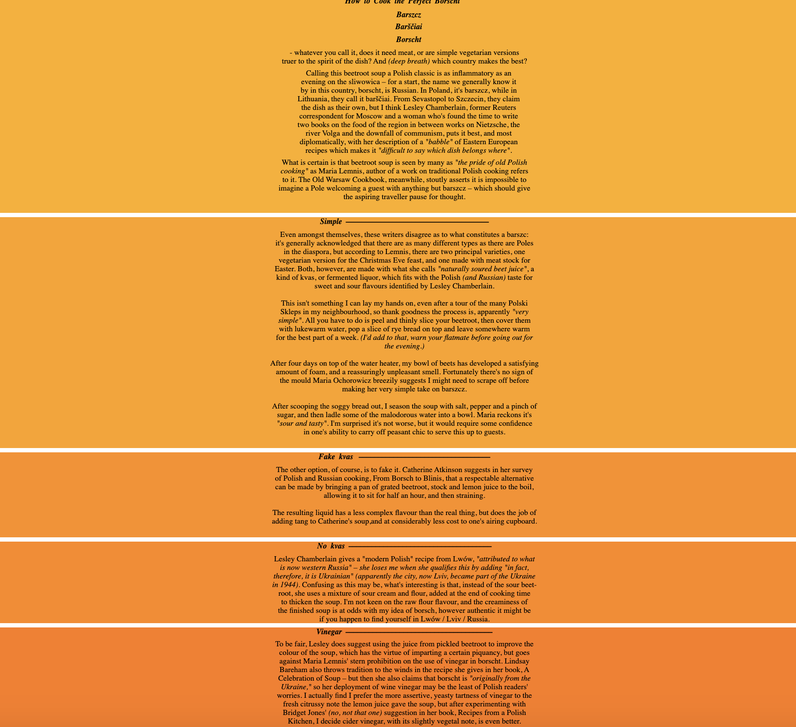
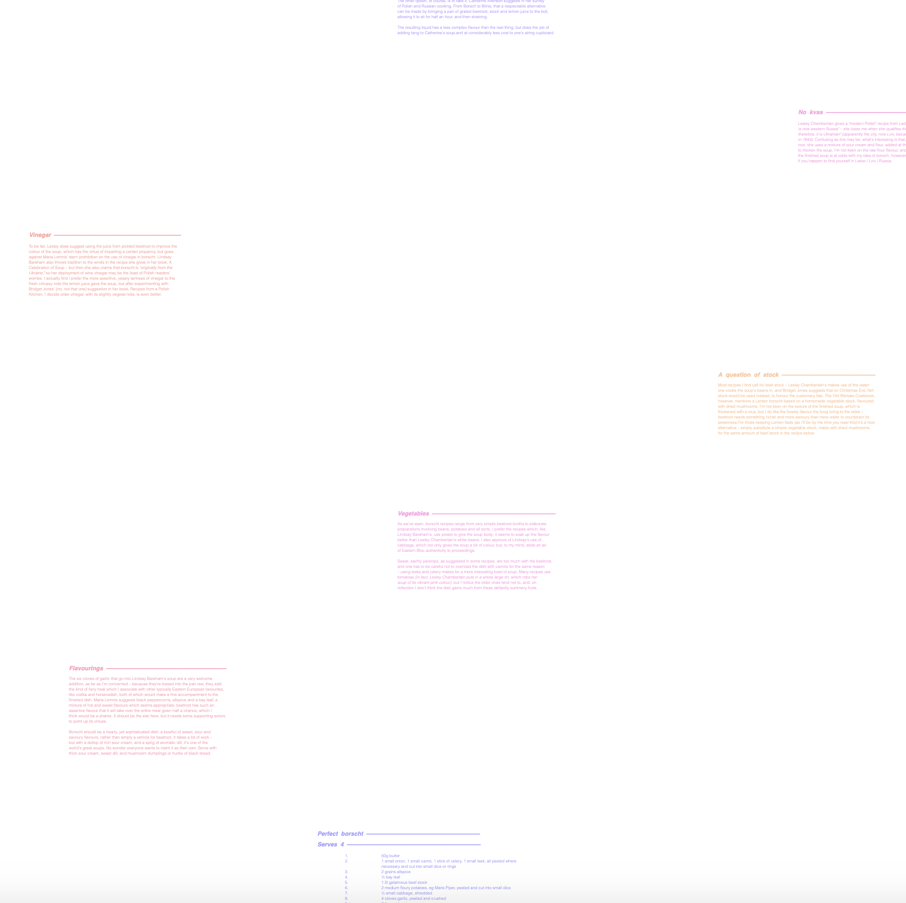

I first tried lining all the different sections up top one next to another, but then,
I re-read the email and realized we couldn’t use flexbox, which is what I think
allowed for them to take on that position. I guess I will now take out flex and try
to make them all individual divs and place them across the page for the same effect...
Or just try out more different ideas.
Version 2.1
Soooo, I decided to start over and do different stuff. So for version 2.1 I chose to play
around with the height of the HTML and body elements as well as setting the margin of
the body. I also defined the width, height, and float of the div so that I can use color
and other CSS elements later. For version 2.11, I took version 2.10 and added a gradient.
Each section was given a class and I used the CSS color codes to pick colors for each
div. I also chose to use text-align to center the text.

Version 2.2
For version 2.2, I played around with the margins for each specific div.
For version 2.21, I tried making the left and right margins of the divs random different
numbers so that the text would kind of be misaligned and I chose to make the text random
pastel colors just to see how the page would look. For 2.22, I also changed the font
family to Helvetica, the weight to lighter, and the font size to 5px. I think the page
makes the recipe look cute and sort-of elegant in a way.

Version 2.3
For version 2.3, I chose to play around with float and clear and paired each div with
either float: right; clear: left, or float: left; clear: right so that they alternate on
the page and steer clear of each other. I also incorporated a dotted border that has an
increase in size with every div. Just for fun!
I chose to apply the same gradient colors that I’d used previously to show the alternating
divs on the white page. And for the dotted border, I chose one side of the border per
div to give a color to, and I reversed the gradient for contrast.
Version 2.4
For version 2.40, I chose to play around with links and followed a similar format from
the previous version. I chose to move all the style elements into a CSS style sheet so
each page that links to the next wouldn't be too long. For version 2.41, I chose to play
with a monospaced font and do a gradient on the border. The closer you get to the end
of the recipe, the brighter the color of the border gets.
Version 2.5
For version 2.50, I chose to play around with float right and margins to create a cascading waterfall effect.
For version 2.52, I nested all the files and kept the cascading shapes and at the end the entire waterfall
is revealed. I kept the pastel color scheme from 2.2.
Some important things from the reading I have to keep in mind:
I think it is so tedious to always make new folders, and label things correctly, but it
pays off in the long run. If one folder is incorrectly labeled, for instance the title on
a CSS style sheet, then you'd have to go into every single HTML file you linked the
sheet on and change the title of the sheet. So I think good coding ettiquete is important
and it's better to be neat than to have to look through for errors later on.